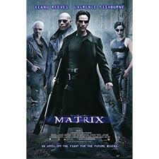

Keanu Reeves is a Canadian actor/director/musician/immortal, famous for his work as the most stoic actor alive.
- "Wide" acting range, from soft-spoken action hero to soft-spoken action hero.
- Played bass for different rock bands
- Underwent firearm training for his films
- Skilled motorcyclist
- Wrote the text for an "adult picture book."
- Known for being a legitimately nice guy.
Projects
-
The Matrix

-
Ode to Happiness

-
Quatro Formaggi